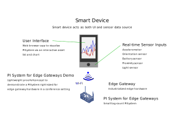

<div id="myCarousel" class="carousel slide" data-ride="carousel" ng-init="init()" style="height:100%;width:100%;background-color:rgb(59,56,56)">
    <!-- Indicators -->
    <ol class="carousel-indicators">
        <li data-target="#myCarousel" data-slide-to="0" class="active"></li>
        <li data-target="#myCarousel" data-slide-to="1"></li>
        <li data-target="#myCarousel" data-slide-to="2"></li>
        <li data-target="#myCarousel" data-slide-to="3"></li>
        <li data-target="#myCarousel" data-slide-to="4"></li>
        <li data-target="#myCarousel" data-slide-to="5"></li>
        <li data-target="#myCarousel" data-slide-to="6"></li>
        <li data-target="#myCarousel" data-slide-to="7"></li>
    </ol>

    <!-- Wrapper for slides -->
    <div class="carousel-inner" role="listbox" style="height:100%;width:100%">
        <div style="height:100%;width:100%" class="carousel-item active"></div>
        <div style="height:100%;width:100%" class="carousel-item"></div>
        <div style="height:100%;width:100%" class="carousel-item"></div>
        <div style="height:100%;width:100%" class="carousel-item"></div>
        <div style="height:100%;width:100%" class="carousel-item"></div>
        <div style="height:100%;width:100%" class="carousel-item"></div>
        <div style="height:100%;width:100%" class="carousel-item"></div>
        <div style="height:100%;width:100%" class="carousel-item" onclick="window.location.href = '#/ar/Asset%201/gauges/';"></div>
    </div>

    <!-- Left and right controls -->
    <a class="carousel-control-prev" href="" role="button" data-slide="prev" onclick="$('#myCarousel').carousel('prev');">
        <span class="carousel-control-prev-icon" aria-hidden="true"></span>
        <span class="sr-only">Previous</span>
    </a>
    <a class="carousel-control-next" href="" role="button" data-slide="next" onclick="$('#myCarousel').carousel('next');">
        <span class="carousel-control-next-icon" aria-hidden="true"></span>
        <span class="sr-only">Next</span>
    </a>

</div>

<!--
<div class="row" ng-init="init()" style="margin:0px;text-align:center;padding:20px;">
    <div class="panel panel-default" style="">
        <div class="panel-body">
            <h4 style="margin-top:20px;margin-bottom:20px;">Curious about what you're looking at? You've come to the right place! Look below to see a description of how data flows through this application.</h4>

            <div><i class="fa fa-mobile-phone" style="margin-right:10px"></i>First, real-time data is generated by sensors built into your phone--specifically, the phone's accelerometer, and so on (or in units with attached IoT sensor modules, data will be read directly from the attached sensors). That gateway PI System, of course, could also be connected to hundreds of different sensors, SCADA points, control system readings, and so much more!
            </div>
            <i class="fa fa-arrow-down fa-4" style=""></i>
            <div><i class="fa fa-gears" style="margin-right:10px"></i>On your phone, you opened this web app, which is running on the IoT gateway, and behind the scenes, this web app is running code to read new values from those real-world sensors.
            </div>
            <i class="fa fa-arrow-down fa-4" style=""></i>
            <div><i class="fa fa-rss" style="margin-right:10px"></i>Specifically, this web app's code is taking that sensor data and streaming it in real time to the PI Web API REST web service, which is running on the IoT gateway.
            </div>
            <i class="fa fa-arrow-down fa-4" style=""></i>
            <div><i class="fa fa-save" style="margin-right:10px"></i>The PI Web API is handling each new data message and writing it to an OSIsoft PI Server, which is also installed on the IoT gateway.
            </div>
            <i class="fa fa-arrow-down fa-4" style=""></i>
            <div><i class="fa fa-arrows" style="margin-right:10px"></i>All that is taking place behind the scenes, in real time--so if you want, try wiggling your phone around to generate some interesting accceleration data!  Or, if you're working with a unit that has attached IoT sensor modules, interact with those sensors to see real-time values change on the trend and table displays!
            </div>
            <i class="fa fa-arrow-down fa-4" style=""></i>
            <div><i class="fa fa-line-chart" style="margin-right:10px"></i>And in the mean time, while you use this web app, when you see a <b><a href="#/ar/Asset%201/chart/">trend (click the diagram to see an example!)</a></b> or <b><a href="#/ar/Asset%201/table/">table</a></b> in this app, the app is retrieving (via a PI Web API web request) real-time data that was previously sent to and stored in the gateway PI System. Go ahead and click the <b><a href="/#/">home</a></b> button in the top left of the navigation bar, and navigate through the app, and check out some of that real-time data!
            </div>
            <br />
            <a style="margin-top:20px;" href="#/ar/Asset%201/chart/" >
                
            </a>

             <div style="margin-top:20px;">
                We welcome any questions or comments that you have about this application!  For general technical inquiries, feel free to contact <b><a href="https://techsupport.osisoft.com/Contact-Us/">OSIsoft Technical Support</a></b>.  For questions and comments specifically related to this application, direct emails to the OSIsoft project team: <b><a href="mailto:jsprayberry@osisoft.com">Jason Sprayberry</a></b> and <b><a href="mailto:dlopez@osisoft.com">Dan Lopez</a></b>.
            </div>
    </div>
</div>
-->
<script>
    document.getElementById("loadingSpinner").style.visibility = "hidden";
</script>
